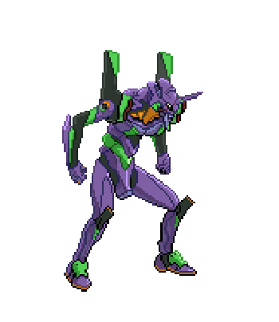

|  |
Alberto BarioChemical Engineer |
Sono un Ingegnere Chimico presso la Micropower S.r.l. Unipersonale, mi occupo della progettazione e autorizzazione degli impianti di produzione e valorizzazione di biogas ottenuto per via anaerobica dalla fermentazione dei reflui agricoli.
Lavoro in questo settore da più di tre anni, ho trascorso il primo anno occupandomi della realizzazione dei disegni esecutivi da utilizzare in cantiere e successivamente mi sono concentrato sugli aspetti autorizzativi e normativi in generale.
Ad oggi mi occupo principalmente delle pratiche di connessione degli impianti alla rete Enel, della produzione della documentazione necessaria per l'esame progetto da parte dei Vigili del Fuoco, delle pratiche autorizzative come la PAS(Procedura Abilitativa Semplificata) e l'Autorizzazione Unica in Provincia (ex. 387). Per concludere nell'ultimo periodo mi sto interessando alle pratiche relative all'ottenimento degli incentivi da parte del GSE.
Ho studiato presso il Politecnico di Torino per 3 anni conseguendo la laurea breve, ho cominciato a lavorare nel settore dell'energia rinnovabile durante l'ultimo anno di studi.
Durante gli anni del lavoro fino ad oggi ho continuato a studiare interessandomi ai settori di grafica e informatica con l'obiettivo di lavorare un giorno in questo settore. Ad oggi ho maturato le seguenti competenze:
| Python3 | ★★★★☆ |
| C | ★★★☆☆ |
| Arduino | ★★☆☆☆ |
| Html | ★★★☆☆ |
| Date | Work |
| 2019-now | Progettista impianti biogas |
| 2015-2019 | Studente di ingegneria chimica al Politecnico di Torino |